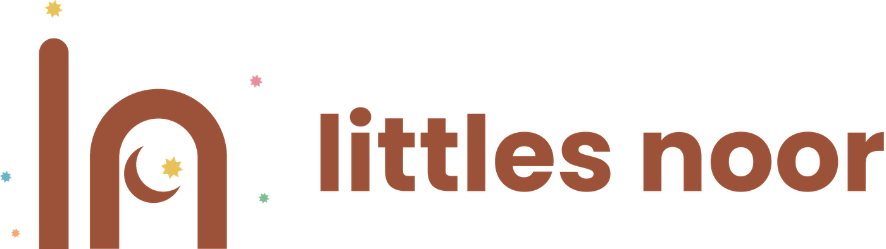

@littlesnoorKartu sakti littles noor: kalimat penyemangat untuk setiap harimu. Satu kartu baru setiap hari 🌙
Pilih topik sesuai yang sedang kamu rasakan:
Kartu hari iniTips: pasang di lock screen, jadi kalimatnya selalu terlihat setiap kali kamu buka HP. Simpan juga halaman ini ke layar utama supaya bisa dibuka seperti aplikasi.
Ketuk kartu untuk melihat, menyimpan, atau membagikan wallpaper. ♥ = favoritmu.
Pilih jam, lalu pasang pengingat di kalender HP. Saat waktunya tiba, buka Saku dan ambil satu kartu untuk hari ini.
Workbook & planner littles noor: PDF + aplikasi di HP. Mulai Lagi, Catatan Majelis, Planner Muslimah 2027, dan Cukup.
Lihat di lynk.id/littlesnoor